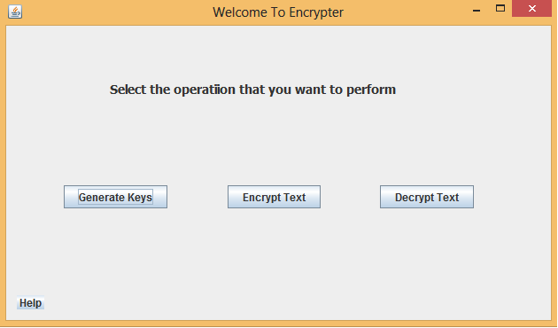
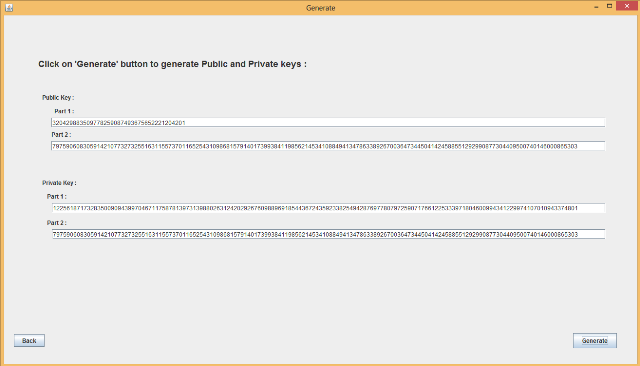
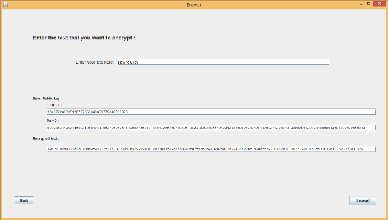
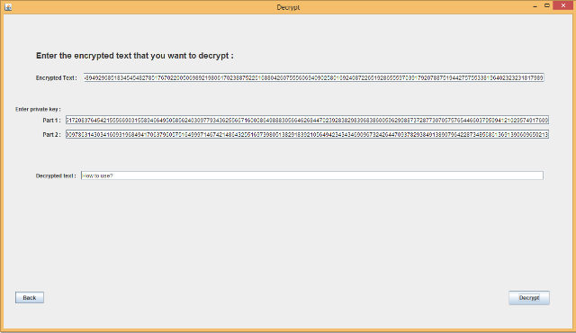

First frame of the application shows Four options:
- Generate
- Encrypt
- Decrypt
- Help

Choose the appropiate option from the frame
- Generate option - Click on 'Generate' button on the Generate frame to generate the keys. Copy all the keys and keep them in a safe place.

- Encrypt option -
- Enter the text that you want to encrypt.
- Enter 'Part 1' and 'Part 2' of public key that you generated previously.
- Click on 'Encrypt' button to get the encrypted text.
- Copy the encrypted text and keep it in the safe place.

- Decrypt option -
- Enter the encrypted text that you want to decrypt.
- Enter 'Part 1' and 'Part 2' of private key that you generated previously.
- Click on 'Decrypt' button to get the original text.

- Help option - Goto this option if you need some help regarding the application.